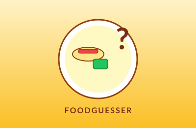

Overview
FoodGuesser is a lightweight browser game in which players are shown a randomly selected dish and have to guess which country it comes from. It's a fun way to learn a bit of food geography, and a great excuse to practice clean, vanilla front-end code.
What's Inside
- Food data API integration to pull random dishes along with their country of origin and an image.
- A scoring system that rewards streaks and tracks the player's best run.
- Responsive HTML/CSS layout so it plays nicely on phone or desktop.
- Plain JavaScript — no frameworks — keeping the build simple and fast to load.
Why It Was Fun
Small, self-contained game projects are a great sandbox: they force you to think about state, animation, error handling (what if the API hiccups?), and player feedback, all in a few hundred lines of code.
What I Learned
Working with an external REST API, handling asynchronous loading states gracefully, and designing a simple game loop that still feels responsive and rewarding.
← Back to projects